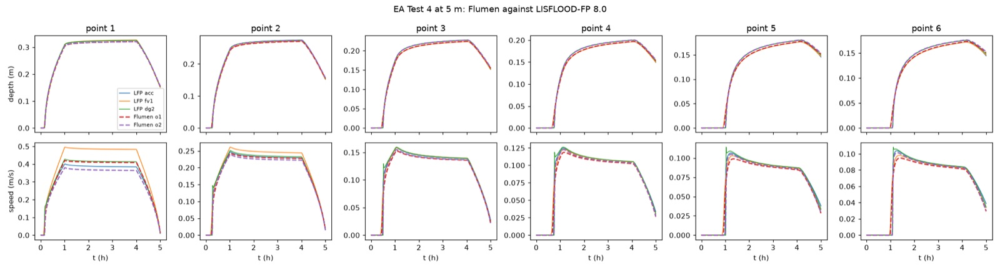
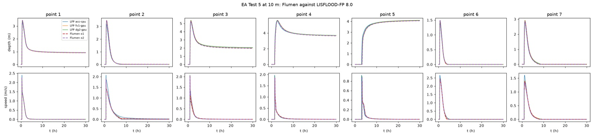
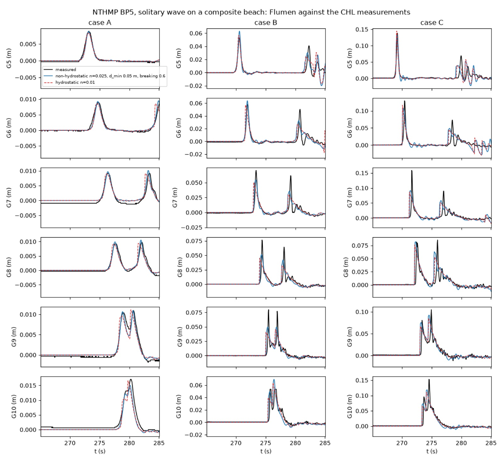
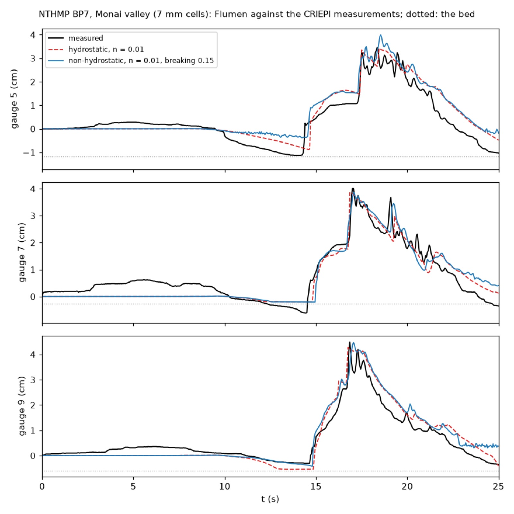
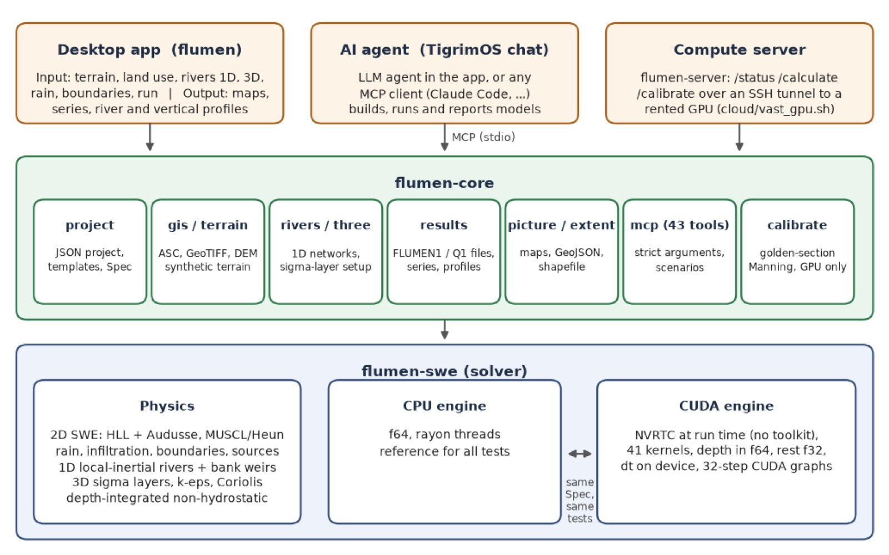

2D shallow water
Finite volumes with an HLL Riemann solver and Audusse hydrostatic reconstruction, first or second order (MUSCL + Heun), robust wetting and drying and point-implicit Manning friction.
Flood · river · coastal · GPU · agent-ready
Flumen solves the shallow-water equations with rain on grid, infiltration and a full set of boundaries, couples them to 1D rivers, extends them to 3D salt and heat on sigma layers, and adds a non-hydrostatic pressure for short waves. Every step is also a Model Context Protocol tool, so an AI agent can build, run and calibrate a model for you.
Written in Rust · CPU reference engine + CUDA engine · MIT licensed source
Features
Import a DEM, paint land use, apply a design storm or a hydrograph, set tides and pumps, run on your own GPU or a rented one, and export the flood extent to GIS.
Finite volumes with an HLL Riemann solver and Audusse hydrostatic reconstruction, first or second order (MUSCL + Heun), robust wetting and drying and point-implicit Manning friction.
Constant, hyetograph, radar grids or design storms (alternating block from an IDF curve, SCS type II), with constant, Green–Ampt or SCS curve-number infiltration per land-use class.
Local-inertial 1D channels with trapezoid, surveyed or DEM-sampled sections, joins, and bank weirs with Villemonte submergence that swap water with the 2D floodplain.
Hydrostatic sigma layers, UNESCO density, baroclinic pressure, parabolic or k–ε turbulence, wind stress, surface heat exchange and Coriolis for estuaries and outfalls.
A depth-integrated non-hydrostatic pressure (Stelling and Zijlema; Yamazaki) for dispersive short waves and tsunami runup, with a breaking switch and a wall-impact rule.
ESRI ASCII grids and GeoTIFF DEMs in metres, land-use rasters and polygon zones, and flood extents written as GeoJSON or shapefiles, plus depth and velocity maps as pictures.
Physics
The same grid carries three extensions of the 2D model, each verified against an analytical result on both engines.
The channel leaves the grid and becomes a chain of 1D sections. When the river rises above the lower bank, weir flow carries water onto the floodplain cells beside it, and it returns the same way as the flood recedes.
Animation is a schematic of the bank exchange, not a model run.
Sea water is heavier than river water, so it slides upstream along the bed as a salt wedge that moves with the tide. Flumen splits the 3D layers from the 2D depth-averaged flow, so the free surface keeps the speed of the 2D solver.
Animation is a schematic of a tidal salt wedge, not a model run.
A hydrostatic model makes short waves travel too fast, so their period error grows with kh. The non-hydrostatic option keeps the error near the depth-integrated limit, and a solitary wave keeps its speed to within 0.6 % after 60 m against 6.6 % for the hydrostatic model.
Period error of standing waves against linear theory, from swe/tests/nonhydro.rs.
GPU
The CUDA engine is compiled at run time, keeps the time step on the device and replays 32-step batches as a CUDA graph. It reproduces the errors of the double-precision CPU engine on every verification test. A laptop without an NVIDIA card sends the run to a rented GPU over an SSH tunnel and gets compact frames back.
RTX 4090 against the CPU engine on 23 threads. Wall-clock seconds for the run.
Validation
Analytical tests first, then the Environment Agency inter-model benchmark against LISFLOOD-FP, then two NTHMP laboratory benchmarks with measured gauges and runup.
| Test | Measure | Result |
|---|---|---|
| Lake at rest | spurious velocity | 10−15 m/s |
| Stoker dam break (wet bed) | L1 depth error, order 1 / 2 | 0.331 / 0.085 % |
| Ritter dam break (dry bed) | L1 depth error, order 1 / 2 | 0.424 / 0.161 % |
| Green–Ampt infiltration | depth infiltrated | 32.78 vs 32.75 mm |
| EA Test 4, 5 m | depth RMSE vs LISFLOOD-FP | 2 mm |
| EA Test 5, 10 m | depth RMSE vs LISFLOOD-FP | 24 mm |
| NTHMP BP5 solitary wave | gauge RMSE, calibrated | 1.0–10.3 mm |
| NTHMP BP7 Monai valley | runup at the highest point | within 1 % |




What did not work is reported too: a splash twice the water depth on the BP5 wall stays 60–67 % low, because it lies outside depth-integrated equations, and the drawdown at one Monai gauge is not reproduced by any physical or numerical setting tried.
Agents
The MCP server is built into the program. An agent such as Claude Code connects to flumen --mcp and calls the same 43 tools that sit behind the window, from import_dem to calibrate_against_observations.
Example sequence of tool calls; the tool names are Flumen's own, the replies are abbreviated.
claude mcp add flumen -- flumen --mcpArchitecture

Paper
The paper describes the solvers, the CUDA engine and the agent interface, and reports every verification and benchmark result on this page, including the ones that failed.
Sompote Youwai · AI Research Group, Department of Civil Engineering, KMUTT · Zenodo, 2026
@misc{youwai2026flumen,
author = {Youwai, Sompote},
title = {Flumen: an agentic, {GPU}-accelerated program for flood and coastal
hydrodynamics, its architecture and its calibration against
laboratory and inter-model benchmarks},
year = {2026},
publisher = {Zenodo},
doi = {10.5281/zenodo.23918670},
url = {https://zenodo.org/records/23918670}
}
Get Flumen
Desktop builds for macOS and Windows are being prepared. To use Flumen on a project now, or to run it on a GPU server, write to the AI Research Group.